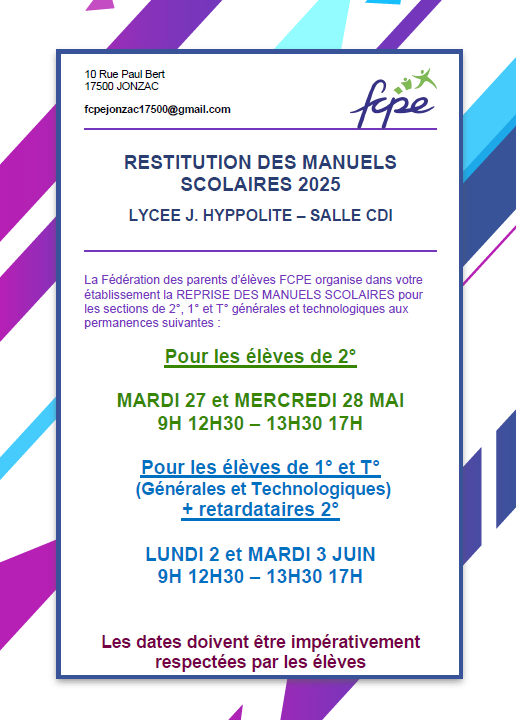
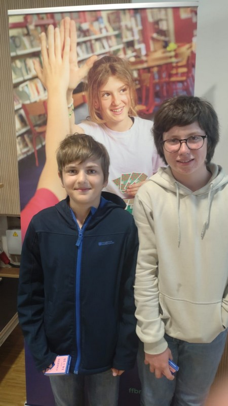
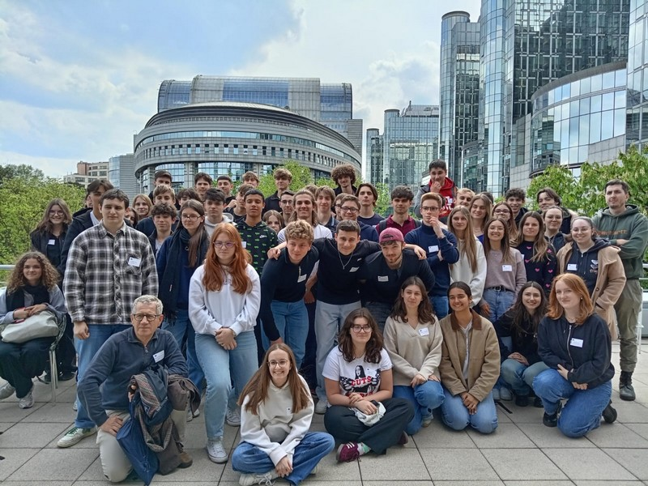
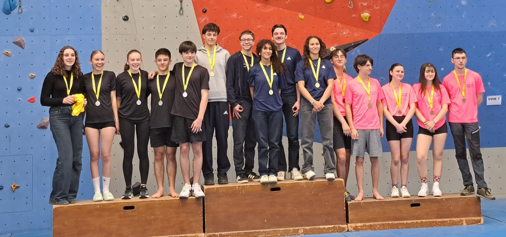

NOTE A L’ATTENTION DES CANDIDATS
ORIGINAIRES DES ACADEMIES :
BORDEAUX – POITIERS – LIMOGES – NANTES – ORLEANS-TOURS – LA REUNION
BTS DIETETIQUE
EPREUVE E5.2
MISE EN OEUVRE D’ACTIVITES TECHNOLOGIQUES D’ALIMENTATION
(pratique 3h00)
Les candidats inscrits aux épreuves de mise en oeuvre d'activités technologiques d'alimentation décidant de ne pas se présenter à cette épreuve, doivent en informer le centre dès que possible.
Chaque candidat devra prévoir le jour de l’épreuve :
- Une tenue professionnelle : charlotte, blouse, tablier, chaussures fermées
- Balance électronique
- 2 torchons de couleur claire
- 2 maniques
- 1 marqueur
Les candidats dont l’heure de passage sera prévue l’après-midi devront être présents à 11h30 pour une mise en loge jusqu’à 13h30. Merci de bien vouloir vous munir d’un repas.
SESSION 2025
Voici les dates et heures de convocation.
Les candidats doivent se présenter 15 minutes avant l'heure prévue.

Le mardi 18 avril 2025, Jules Tranchant , élève de 2nde est arrivé 4ème au championnat régional de bridge en cadets 1 à Parthena.
Il s’est ainsi qualifié pour les finales qui auront lieu à Nantes le 7-8 juin prochain.

Du 14 au 17 avril, des élèves de 2de, 1ère et terminales du lycée Jean Hyppolite de Jonzac , qui suivent la spécialité sciences économiques et sociales, et/ou histoire-géographie géopolitique et sciences politiques, pour une grande partie d’entre eux , ont été à Bruxelles afin de se familiariser avec les institutions européennes.

Pour cela, ils ont visité le comité européen des régions, la commission européenne, le parlement européen, la maison de l'histoire européenne et ont participé au jeu de rôles ''le parlementarium ''. Ce jeu consiste à partir d’une thématique donnée , de trouver des arguments pour ou contre, à débattre, à faires des compromis , des alliances entre les différents courants politiques ; en bref , à simuler la vie de nos parlementaires européens
Sur une note un peu moins sérieuse, ils ont également visité une chocolaterie, avec dégustation bien sûr et découvert quelques maisons ''art nouveau ''.
Cela s'est passé dans une très bonne ambiance ; les élèves ont été attentifs , intéressés et ont participé en posant des questions pertinentes aux différents intervenants rencontrés.
Pour la seconde année consécutive l'équipe d'escalade du lycée est parvenue à se qualifier au championnat de france UNSS.
Cette année ceux ci se dérouleront du 19 au 21 mai 2025 à Briançon (05)

L'équipe est composée de
- Drouot camille
- Drouot Emma
- Avril Jean
- Chapuzet Joseph
Et d'un jeune officiel de niveau académique en la personne de Beaufort Loïs.
Durant ce championnat, ils effectuerons tous 4 voies de difficulté (but aller le plus haut possible) sur une structure artificielle de niveau internationale puis 2 blocs (mouvement spectaculaire sans corde et baudrier) et enfin une voie de vitesse (but atteindre le sommet le plus vite possible)
Après leur 9eme place l'année dernière, souhaitons leur un meilleur résultat grâce à leur expérience engrangée.
L'équipe EPS

{kind=link}
{kind=link}